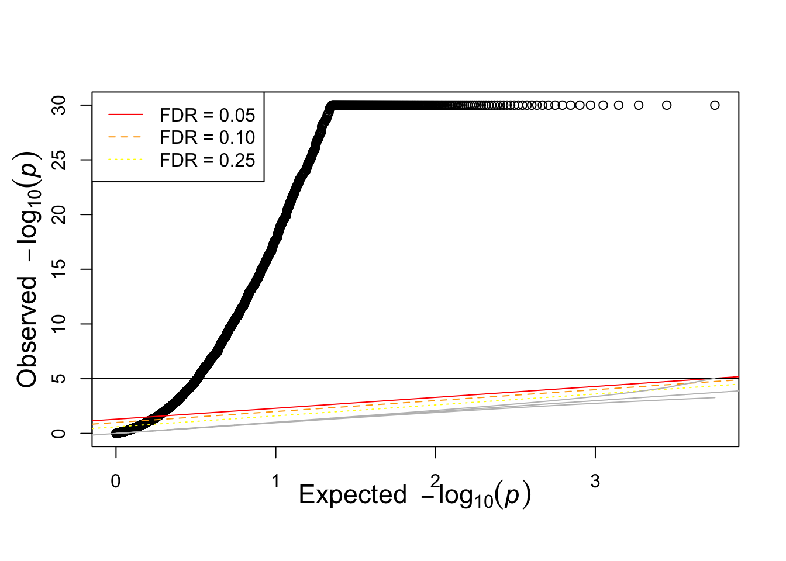
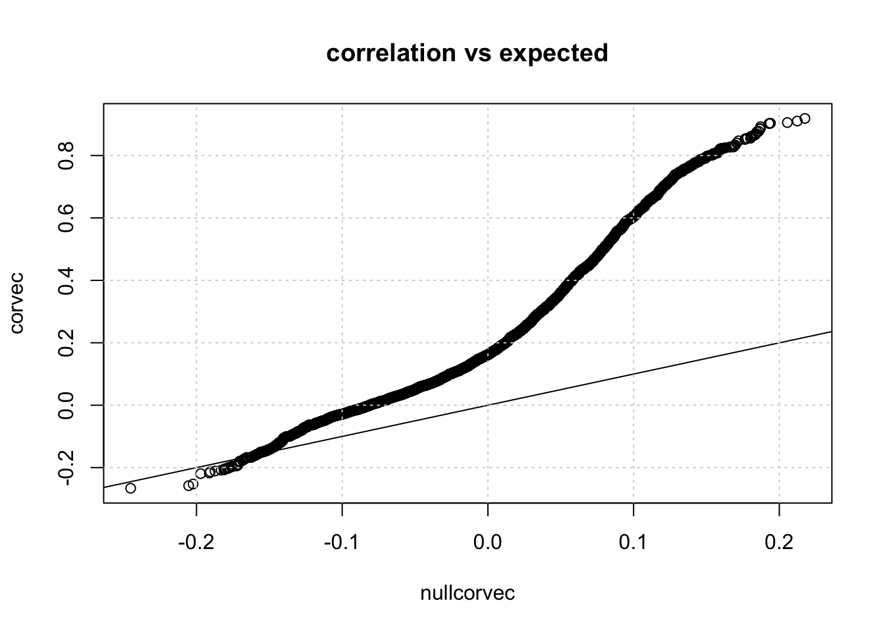
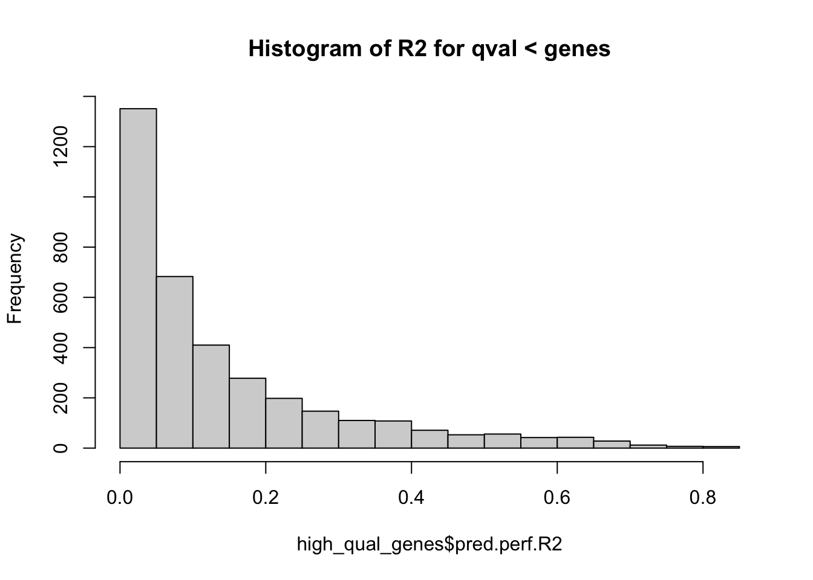
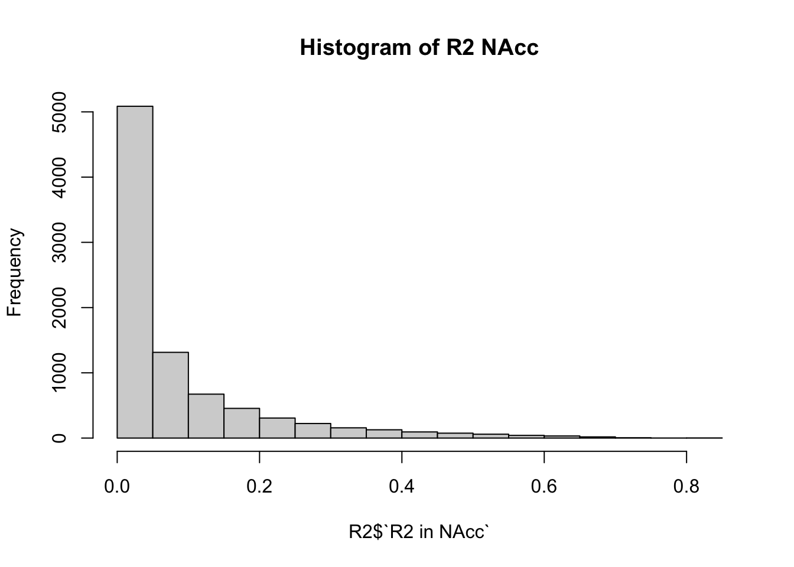

Last updated: 2023-04-04
Checks: 7 0
Knit directory: PTRS-Rat-Analysis/
This reproducible R Markdown analysis was created with workflowr (version 1.7.0). The Checks tab describes the reproducibility checks that were applied when the results were created. The Past versions tab lists the development history.
Great! Since the R Markdown file has been committed to the Git repository, you know the exact version of the code that produced these results.
Great job! The global environment was empty. Objects defined in the global environment can affect the analysis in your R Markdown file in unknown ways. For reproduciblity it’s best to always run the code in an empty environment.
The command set.seed(20230404) was run prior to running
the code in the R Markdown file. Setting a seed ensures that any results
that rely on randomness, e.g. subsampling or permutations, are
reproducible.
Great job! Recording the operating system, R version, and package versions is critical for reproducibility.
Nice! There were no cached chunks for this analysis, so you can be confident that you successfully produced the results during this run.
Great job! Using relative paths to the files within your workflowr project makes it easier to run your code on other machines.
Great! You are using Git for version control. Tracking code development and connecting the code version to the results is critical for reproducibility.
The results in this page were generated with repository version 7dd0181. See the Past versions tab to see a history of the changes made to the R Markdown and HTML files.
Note that you need to be careful to ensure that all relevant files for
the analysis have been committed to Git prior to generating the results
(you can use wflow_publish or
wflow_git_commit). workflowr only checks the R Markdown
file, but you know if there are other scripts or data files that it
depends on. Below is the status of the Git repository when the results
were generated:
Ignored files:
Ignored: .DS_Store
Note that any generated files, e.g. HTML, png, CSS, etc., are not included in this status report because it is ok for generated content to have uncommitted changes.
These are the previous versions of the repository in which changes were
made to the R Markdown (analysis/Br_EN_Validation.Rmd) and
HTML (docs/Br_EN_Validation.html) files. If you’ve
configured a remote Git repository (see ?wflow_git_remote),
click on the hyperlinks in the table below to view the files as they
were in that past version.
| File | Version | Author | Date | Message |
|---|---|---|---|---|
| Rmd | 7dd0181 | sabrina-mi | 2023-04-04 | migrated box analysis files |
library(readr)
library(tidyverse)── Attaching core tidyverse packages ──────────────────────── tidyverse 2.0.0 ──
✔ dplyr 1.1.1 ✔ purrr 1.0.1
✔ forcats 1.0.0 ✔ stringr 1.5.0
✔ ggplot2 3.4.1 ✔ tibble 3.2.1
✔ lubridate 1.9.2 ✔ tidyr 1.3.0
── Conflicts ────────────────────────────────────────── tidyverse_conflicts() ──
✖ dplyr::filter() masks stats::filter()
✖ dplyr::lag() masks stats::lag()
ℹ Use the ]8;;http://conflicted.r-lib.org/conflicted package]8;; to force all conflicts to become errors"%&%" = function(a,b) paste(a,b,sep="")
dir="/Users/sabrinami/Library/CloudStorage/Box-Box/rat-genomic-analysis/PTRS-2023/RatXcan/"library(stringr)
filelist <- list.files(dir %&% "Results/associations", pattern = "Br__association_", full.names = TRUE)
full_df <- data.frame()
for(file in filelist) {
assoc_file <- suppressMessages(read_tsv(file, col_names = TRUE))
# extract phenotype from regex matching in file name
pheno_id <- str_match(file, "association_(.*?).txt")[,2]
tempo <- cbind(assoc_file, metabolic_trait=pheno_id) %>% select(-c(status))
full_df <- rbind(full_df, tempo)
}
saveRDS(full_df, dir %&% "assoc_full_df.RDS")number of significant associations for each gene
tempo_df <- full_df %>% filter(pvalue < .05/5601)
#428 sig genes
tempo_df %>% group_by(gene) %>% summarise(n = n())# A tibble: 32 × 2
gene n
<chr> <int>
1 ENSRNOG00000000511 1
2 ENSRNOG00000000795 1
3 ENSRNOG00000000816 1
4 ENSRNOG00000000831 1
5 ENSRNOG00000000975 2
6 ENSRNOG00000000977 1
7 ENSRNOG00000001047 2
8 ENSRNOG00000001069 1
9 ENSRNOG00000001159 2
10 ENSRNOG00000001194 2
# ℹ 22 more rowsnumber significant genes for each phenotype
tempo_df %>% group_by(metabolic_trait) %>% summarise(n = n())# A tibble: 2 × 2
metabolic_trait n
<chr> <int>
1 length_w_tail_cm 26
2 length_wo_tail_cm 11suppressMessages(library(tidyverse))
suppressMessages(library(glue))
PRE = "/Users/sabrinami/Library/CloudStorage/Box-Box/rat-genomic-analysis/PTRS-2023"
library("RSQLite")
sqlite <- dbDriver("SQLite")
dbname <- glue("{PRE}/RatXcan/Br_elasticNet.db") ## add full path if db file not in current directory
## connect to db
db = dbConnect(sqlite,dbname)
## list tables
dbListTables(db)[1] "construction" "extra" "sample_info" "weights" ## convenience query function
query <- function(...) dbGetQuery(db, ...)
## example queries
query('select count(*) from weights') count(*)
1 1422414,224 snp-gene pairs.
weights = dbGetQuery(db,"select * from weights")
glimpse(weights)Rows: 14,224
Columns: 6
$ gene <chr> "ENSRNOG00000040300", "ENSRNOG00000040300", "ENSRNOG0000005…
$ rsid <chr> "1_1643610_C_T", "1_2092364_C_T", "1_1643610_C_T", "1_20923…
$ varID <chr> "1_1643610_C_T", "1_2092364_C_T", "1_1643610_C_T", "1_20923…
$ ref_allele <chr> "C", "C", "C", "C", "C", "C", "C", "C", "C", "C", "C", "C",…
$ eff_allele <chr> "T", "T", "T", "T", "T", "T", "T", "T", "T", "T", "T", "T",…
$ weight <dbl> -0.199572530, 0.098030720, -0.123155000, 0.238959200, -0.25…extra = dbGetQuery(db,"select * from extra")
glimpse(extra)Rows: 5,601
Columns: 6
$ gene <chr> "ENSRNOG00000040300", "ENSRNOG00000050129", "ENSRNOG00…
$ genename <chr> "Raet1e", "AABR07000137.1", "AABR07000145.1", "AABR070…
$ n.snps.in.model <int> 2, 2, 2, 1, 2, 1, 2, 2, 2, 2, 2, 1, 2, 2, 2, 2, 1, 2, …
$ pred.perf.R2 <dbl> 2.687766e-02, 4.222472e-02, 3.455208e-02, 1.769772e-03…
$ pred.perf.pval <dbl> 1.339141e-02, 1.857276e-03, 4.959378e-03, 5.282966e-01…
$ pred.perf.qval <int> NA, NA, NA, NA, NA, NA, NA, NA, NA, NA, NA, NA, NA, NA…construction = dbGetQuery(db,"select * from construction ")
sample_info = dbGetQuery(db,"select * from sample_info")
nsam = sample_info$n.samples
weights %>% count(gene) %>% arrange(desc(n)) %>% head(20) gene n
1 ENSRNOG00000047706 22
2 ENSRNOG00000000451 18
3 ENSRNOG00000000436 16
4 ENSRNOG00000026799 16
5 ENSRNOG00000000478 15
6 ENSRNOG00000000433 14
7 ENSRNOG00000000841 14
8 ENSRNOG00000022283 14
9 ENSRNOG00000027157 14
10 ENSRNOG00000061639 14
11 ENSRNOG00000000432 13
12 ENSRNOG00000054031 13
13 ENSRNOG00000058784 13
14 ENSRNOG00000059770 13
15 ENSRNOG00000029500 12
16 ENSRNOG00000039744 12
17 ENSRNOG00000056637 12
18 ENSRNOG00000062067 12
19 ENSRNOG00000000423 11
20 ENSRNOG00000000435 11weights %>% count(gene) %>% arrange(desc(n)) %>% .[["n"]] %>% summary() Min. 1st Qu. Median Mean 3rd Qu. Max.
1.00 2.00 2.00 2.54 3.00 22.00 devtools::source_gist("38431b74c6c0bf90c12f")ℹ Sourcing gist "38431b74c6c0bf90c12f"
ℹ SHA-1 hash of file is "cbeca7fd9bf1602dee41c4f1880cc3a5e8992303"qqunif(extra$pred.perf.pval)Warning in qqunif(extra$pred.perf.pval): thresholding p to 1e-30
devtools::source_gist("a925fea01b365a8c605e")ℹ Sourcing gist "a925fea01b365a8c605e"
ℹ SHA-1 hash of file is "01da6a099ce8e3272b3036fcf075b7afa5287dad"qqR2(extra$pred.perf.R2,nsam,main="R2 vs expected")
Using qvalue < .05
library(qvalue)
qq = qvalue(extra$pred.perf.pval)
#hist(qq$qvalues)extra$pred.perf.qval = qq$qvalues
high_qual_genes = filter(extra, extra$pred.perf.qval < .05)
hist(high_qual_genes$pred.perf.R2, main="Histogram of R2 for qval < genes")
R2 generated from initial analysis
library(readxl)
R2 = suppressWarnings(read_excel("/Users/sabrinami/Library/CloudStorage/Box-Box/rat-genomic-analysis/PTRS-2023/RatXcan/Results/santhanam-et-al-2022_supplementary-tables-ssr.xlsx", sheet = "ST15 R2 betweeen Tissues", skip=1))
hist(R2$`R2 in NAcc`, main="Histogram of R2 NAcc")
full_R2 = inner_join(extra, R2, by=c("gene"="Rat Ensembl ID"))
full_R2 = select(full_R2, c("gene", "pred.perf.R2", "R2 in NAcc", "R2 in IL", "R2 in LHb", "R2 in PL", "R2 in OFC"))(The results here are a good sign for the model, but statistically meaningless, because the testing set is the same as the training set)
pred_expr = read.table("/Users/sabrinami/Library/CloudStorage/Box-Box/rat-genomic-analysis/PTRS-2023/RatXcan/Results/Br_EN__predict.txt", header=TRUE)
obs_expr = read.csv("/Users/sabrinami/Library/CloudStorage/Box-Box/rat-genomic-analysis/PTRS-2023/RatData/phenotypes/gexBr.csv",header = TRUE)
gene_list = colnames(pred_expr)[-c(1,2)]
df = data.frame(gene = gene_list, cor= vector("numeric", 5601))
for(i in 3:5603){
gene=colnames(pred_expr)[i]
pred = pred_expr[,c(1,i)]
obs = obs_expr[,c("X",gene)]
temp = inner_join(pred,obs, by=c("FID" = "X"))
colnames(temp) = c("FID", "Predicted", "Observed")
r = cor(temp$Predicted,temp$Observed)
df[i-2,2]=r
}
hist(df$cor)devtools::source_gist("a925fea01b365a8c605e")
qqR(df$cor,nsam,main="correlation vs expected")
sessionInfo()R version 4.2.2 (2022-10-31)
Platform: x86_64-apple-darwin17.0 (64-bit)
Running under: macOS Big Sur ... 10.16
Matrix products: default
BLAS: /Library/Frameworks/R.framework/Versions/4.2/Resources/lib/libRblas.0.dylib
LAPACK: /Library/Frameworks/R.framework/Versions/4.2/Resources/lib/libRlapack.dylib
locale:
[1] en_US.UTF-8/en_US.UTF-8/en_US.UTF-8/C/en_US.UTF-8/en_US.UTF-8
attached base packages:
[1] stats graphics grDevices utils datasets methods base
other attached packages:
[1] readxl_1.4.2 qvalue_2.30.0 RSQLite_2.3.0 glue_1.6.2
[5] lubridate_1.9.2 forcats_1.0.0 stringr_1.5.0 dplyr_1.1.1
[9] purrr_1.0.1 tidyr_1.3.0 tibble_3.2.1 ggplot2_3.4.1
[13] tidyverse_2.0.0 readr_2.1.4 workflowr_1.7.0
loaded via a namespace (and not attached):
[1] fs_1.6.1 usethis_2.1.6 devtools_2.4.5 bit64_4.0.5
[5] httr_1.4.5 rprojroot_2.0.3 gh_1.4.0 tools_4.2.2
[9] profvis_0.3.7 bslib_0.4.2 utf8_1.2.3 R6_2.5.1
[13] DBI_1.1.3 colorspace_2.1-0 urlchecker_1.0.1 withr_2.5.0
[17] tidyselect_1.2.0 prettyunits_1.1.1 processx_3.8.0 bit_4.0.5
[21] curl_5.0.0 compiler_4.2.2 git2r_0.31.0 httr2_0.2.2
[25] cli_3.6.0 sass_0.4.5 scales_1.2.1 callr_3.7.3
[29] rappdirs_0.3.3 digest_0.6.31 rmarkdown_2.20 pkgconfig_2.0.3
[33] htmltools_0.5.4 sessioninfo_1.2.2 fastmap_1.1.1 highr_0.10
[37] htmlwidgets_1.6.2 rlang_1.1.0 rstudioapi_0.14 shiny_1.7.4
[41] jquerylib_0.1.4 generics_0.1.3 jsonlite_1.8.4 vroom_1.6.1
[45] magrittr_2.0.3 Rcpp_1.0.10 munsell_0.5.0 fansi_1.0.4
[49] lifecycle_1.0.3 stringi_1.7.12 whisker_0.4.1 yaml_2.3.7
[53] pkgbuild_1.4.0 plyr_1.8.8 grid_4.2.2 blob_1.2.4
[57] parallel_4.2.2 promises_1.2.0.1 crayon_1.5.2 miniUI_0.1.1.1
[61] splines_4.2.2 hms_1.1.3 knitr_1.42 ps_1.7.3
[65] pillar_1.9.0 reshape2_1.4.4 pkgload_1.3.2 evaluate_0.20
[69] getPass_0.2-2 remotes_2.4.2 vctrs_0.6.1 tzdb_0.3.0
[73] httpuv_1.6.9 cellranger_1.1.0 gtable_0.3.3 cachem_1.0.7
[77] xfun_0.37 mime_0.12 xtable_1.8-4 gitcreds_0.1.2
[81] later_1.3.0 memoise_2.0.1 timechange_0.2.0 ellipsis_0.3.2